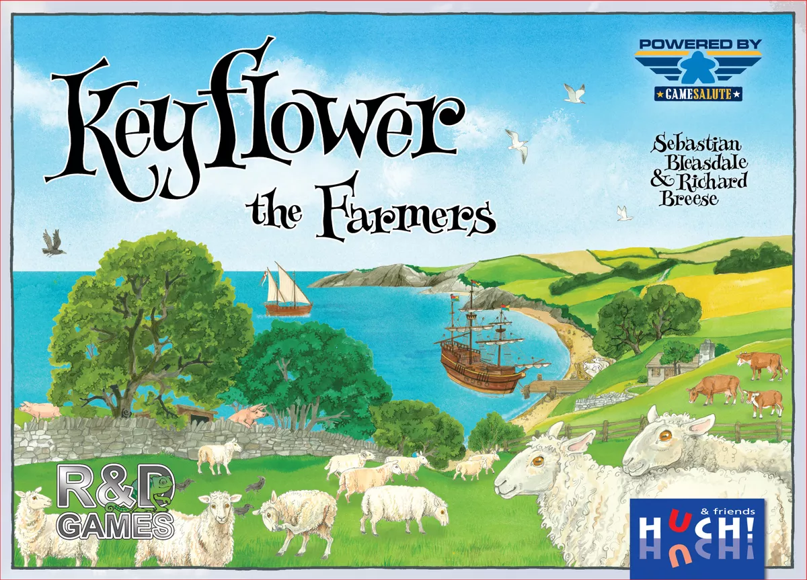

HU005
大五月花號：農夫擴充
遊戲人數：２－６人
遊戲時長：９０－１２０分鐘
建議年齡：１４歲以上
產品介紹
《大五月花號：農夫擴充》是《大五月花號》的延伸版本。
在《大五月花號》中，每位玩家都會在四個季節中藉由成功地競標一系列的村莊板塊（專門的建築還有船隻）、技能、資源還有工人（米寶），來發展自己獨特的村莊。
而在《大五月花號：農夫擴充》中，玩家則會透過獲得新的農業建築、種植小麥、收集還有繁衍農場動物（牛、豬 、羊）來發展農業經濟。
在道路隔開的區域，通通變成了可以飼養動物的牧場，為基本遊戲添加了新的範圍還有思考層面。
透過獲得動物、飼養動物、收成小麥、還有牧場的佈局都可以讓你得到分數。
玩家可以將《大五月花號：農夫擴充》裡的所有板塊隨機搭配基本版的《大五花月號》板塊來組成遊戲所需要的板塊，或者是將兩種遊戲板塊混合在一起玩，來增加遊戲的豐富性。